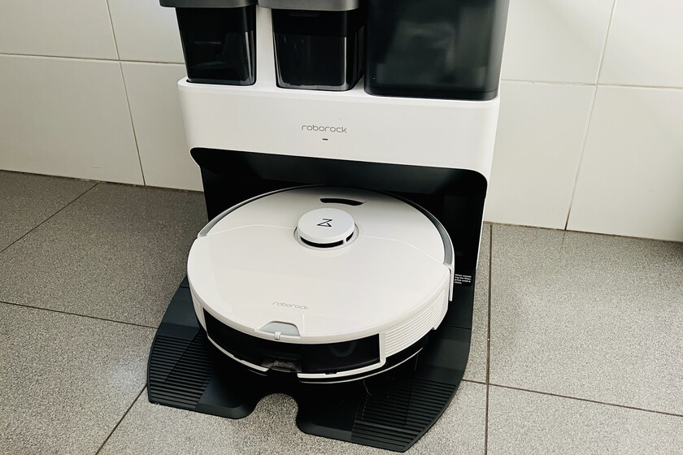

Análisis
Roborock S7 Pro Ultra, análisis: vine por el robot aspirador y me quedé por su colosal base
Analizamos a fondo el Roborock S7 Pro Ultra, uno de los robots aspiradores más innovadores y avanzados del mercado y su colosal base: así es su rendimiento en limpieza, navegación, autonomía y más. LEER MÁS
Huawei MateBook D 16, análisis: el portátil grande que uno puede imaginar cuando quiere que sea bueno, bonito y barato
Si necesitamos una gran pantalla y ningún requerimiento especial, este Huawei Matebook D 16 nos permite conseguir algo muy solvente por poco dinero. LEER MÁS
Síguenos